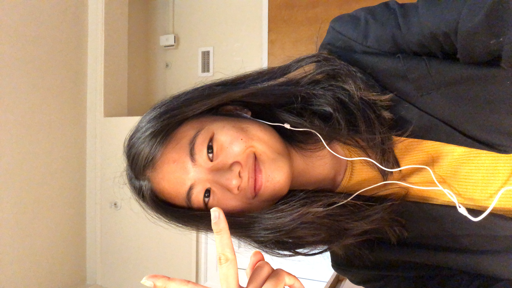
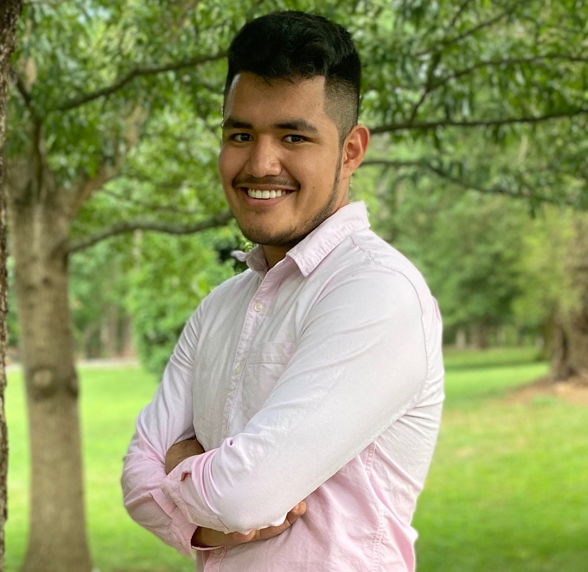
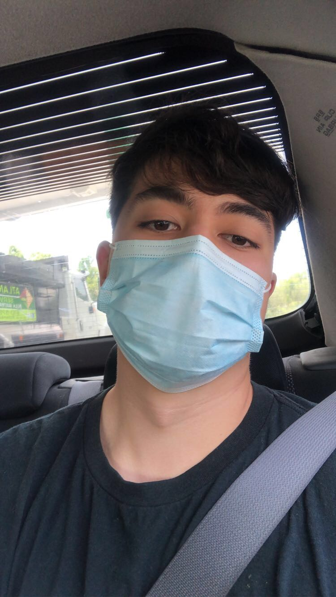
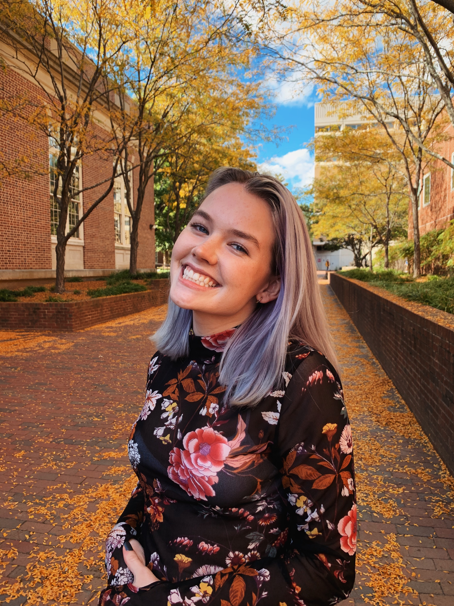
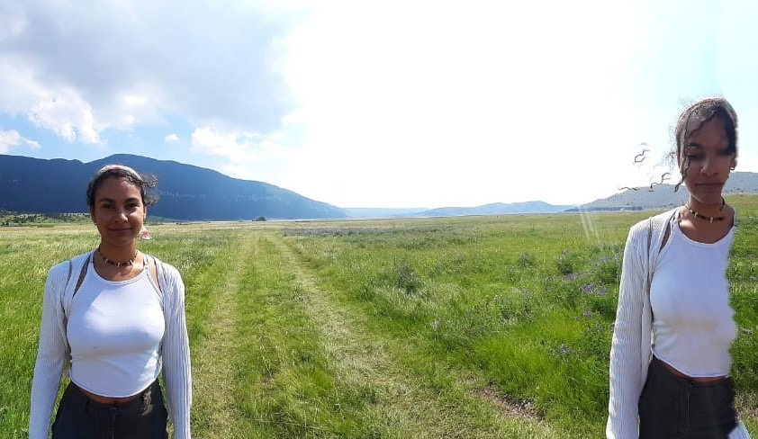

Jennes KangJennes Kang is a student at UNC-Chapel Hill studying computer science and Spanish linguistics. She is a podcast enthusiast and picks Hidden Brain, Radio Ambulante, Philosophize this, and Thrilling Tales of Modern Capitalism as her favorites. After creating a couple of podcast episodes with her friend during her gap year and publishing them on a local radio station, she became interested in starting a podcast. She knew she wanted to work with a few friends who she clicks with and is happy to have created the current team that works well together. She is excited about the future of the podcast and for the team to create something from scratch and have a memory capsule that all of them can look back on after graduating from college. Her dream is to see all of her team members face to face after Covid, and be able to work and have fun together in person. During her free time, she likes learning languages, singing, playing the ukulele, and taking frequent naps. |

Mike GarciaMike Garcia is a student at the University of North Carolina at Chapel Hill and he plans on double majoring in Computer Science and Business. He is currently a pre-admit in the Kenan-Flagler Business School and has hopes to eventually move to NY work. His favorite podcast to listen to is “The Joe Rogan Experience.” Mike enjoys making random projects and due to this ambition he decided to be one of the co-host of passioners podcast. His recreational activities include going to the gym, chess, boxing, wrestling, going to the mountains, and creating random hobbies like mazes. Fun Facts about Mike include: going inside the Vatican Cathedral, winning the Hot Wing Eating Contest, and has never received a speeding ticket so far. |

Fernando GarciaFernando (he/him/his) is currently a sophomore at the University of North Carolina at Chapel Hill, where he majors in Computer Science, and minors in Statistics and Analytics and Biology. At UNC, he is a part of the Honors College, an undergraduate teaching assistant for COMP 110: Introduction to Programming, and a volunteer research assistant conducting computational neuroimaging research with the Psychiatry department. When he is free, he likes to spend his time playing sports. He is also involved with running and maintaining the Passioners Podcast website. A fun fact about him, is that he loves to travel, and has been to five different countries. |

Claire HelmsClaire (she/her/hers) is a sophomore at UNC Chapel Hill double-majoring in Computer Science and Media and Journalism and minoring in Music. At UNC outside of classes, she’s a UTA for COMP110, an alternative spring break leader with APPLES Service Learning, and a writer and model for Coulture Magazine! Whenever she has free time, she likes to get involved with student theatre and the UNC Newman Center. Claire’s the social media director for Passioners Podcast, and she hopes to create fun content that doesn’t clog the timeline. She thinks Passioners is an exciting way to be limitlessly creative and a reminder of the constant inspiration we can gain from others. A fun fact about Claire is she’s obsessed with space, and if it weren’t for the legal blindness in her right eye, she would pursue being an astronaut. |

Lana HadziosmanovicLana Hadziosmanovic is a Bosnian-Jamaican student studying at Brown University. She is acting as the illustrator for the Passioners Podcast, hoping to personify the individuals featured in the episodes by conveying their character and passion through her depictions of them. Besides drawing, her hobbies include playing the electric guitar, reading and writing, sewing, and learning Spanish. She wants to work in the non-profit sector in the future and tries to devote her free time to working with local NGOs in her community. A fun fact about Lana is that she has lived on three different continents in the past three years. |